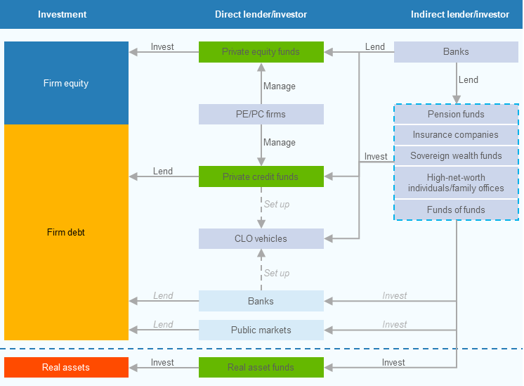

سرمایه خصوصی (Private Capital) چیست؟ | راهنمای جامع مفهومی
نویسنده: پیمان کاویانی فر
تاریخ انتشار: ۲۲ مرداد ۱۴۰۵
«سرمایه خصوصی» (Private Capital)، چتر مفهومی اصلی در حوزه سرمایهگذاری و تأمین مالی در بازارهای غیرعمومی است و دامنه آن از سرمایهگذاری خصوصی و جسورانه تا بدهی خصوصی و داراییهای واقعی را شامل میشود. پیدایش و تحول در سرمایه خصوصی، اندازه بازار جهانی، سازوکار خلق ارزش و پیامدهای آن برای اقتصاد ایران از جمله موارد مهمی است که برای درک این مفهوم نیاز است بررسی شود.
از آنجا که سرمایه خصوصی (Private Capital) یکی از مفاهیم جامع در حوزه تأمین مالی و سرمایهگذاری در اقتصاد مدرن است، این مفهوم دامنهای وسیعتر نسبت به «سرمایهگذاری خصوصی» (Private Equity) دارد. «سرمایهگذاری خصوصی» فقط یکی از اجزای یک اکوسیستم بزرگتر است که شامل «سرمایهگذاری خطرپذیر» (Venture Capital)، «اعتبار خصوصی» (Private Credit) و «داراییهای واقعی» (Real Assets) نیز میشود. [1] [2]
سرمایه خصوصی چیست؟
تعریف و دامنه سرمایه خصوصی
سرمایه خصوصی به طیفی از سرمایهگذاریها و تأمین مالیهایی میان سرمایهگذاران و مالکان داراییها یا بنگاههایی اشاره دارد که بهطور معمول خارج از بازارهای عمومی انجام میشود. در این چارچوب، «خصوصی» به معنای عدم معامله عمومی ابزار یا دارایی در زمان سرمایهگذاری است، نه لزوماً مالکیت خصوصی به معنای حقوقی آن. به همین دلیل، یک شرکت خصوصی، یک پروژه زیرساختی، یک وام مستقیم به بنگاه یا یک سرمایهگذاری در دارایی واقعی میتواند در قلمرو «سرمایه خصوصی» قرار گیرد.
بانک مرکزی اروپا نیز بازارهای خصوصی را دربرگیرنده سه گروه اصلی «سرمایهگذاری خصوصی» (Private Equity)، «اعتبار خصوصی» (Private Credit) و «داراییهای واقعی» (Real Assets) معرفی میکند.
از نظر ساختار بازار، «سرمایه خصوصی» را باید از زیرمجموعههایش متمایز کرد تا بتوان بدهی خصوصی، زیرساخت، املاک، منابع طبیعی، سرمایهگذاری جسورانه و دیگر استراتژیهای غیرعمومی را در یک چارچوب مفهومی یکسان تحلیل کرد.

بلوکهای اصلی سرمایه خصوصی
در یک طبقهبندی عملیاتی، «سرمایه خصوصی» را میتوان در پنج بلوک اصلی دید: «سرمایهگذاری خصوصی»، «سرمایهگذاری خطرپذیر»، «سرمایه رشد»، «اعتبار خصوصی» و «داراییهای واقعی». مرزبندی دقیق میان این بلوکها در منابع مختلف یکسان نیست و برخی منابع، از جمله در موضوع «اعتبار خصوصی»، دامنه متفاوتی از وامدهی مستقیم تا اعتبارات مبتنی بر دارایی را در گزارشهای خود منظور میکنند. [1]
سرمایهگذاری خصوصی (Private Equity)
این مفهوم به سرمایهگذاری در حقوق صاحبان سهام شرکتهای غیربورسی اشاره دارد و در ادبیات حرفهای، استراتژیهایی مانند خرید اهرمی (Buyout)، سرمایهگذاری خطرپذیر، سرمایه رشد، بازسازی و احیای شرکت ( [1]Turnaround) و سرمایهگذاری در شرکتهای دچار بحران (Distressed) را دربرمیگیرد.
در «سرمایهگذاری خطرپذیر»، تمرکز بیشتر بر بنگاههای جوانتر، نوآور و دارای ظرفیت رشد بالا است که به دلیل عدم قطعیت و ریسک عملیاتی و تجاری بیشتر، با محدودیت دسترسی به منابع مالی متعارف مواجهاند. [1]
در مقابل، «سرمایه رشد» نسبتاً برای تأمین مالی توسعه و گسترش بنگاههای بالغ به کار گرفته میشود و لزوماً مستلزم تملک کامل یا کسب کنترل شرکت نیست. [1]
در «بازسازی و احیای شرکت» نیز هدف اصلی، اصلاح عملکرد عملیاتی و مالی بنگاه و بازگرداندن آن به مسیر پایدار رشد و سودآوری است؛ در حالی که سرمایهگذاری در شرکتهای دچار بحران بر شناسایی و بهرهبرداری از فرصتهای سرمایهگذاری در بنگاههایی متمرکز است که با مشکلات مالی، کاهش نقدینگی یا احتمال نکول و ورشکستگی مواجهاند. [1]
اعتبار خصوصی (Private Credit)
منطق «اعتبار خصوصی» از منطق سرمایهگذاری در حقوق صاحبان سهام متفاوت است؛ به این معنا که سرمایهگذار در این حوزه عمدتاً در جایگاه اعتباردهنده قرار دارد و بازده سرمایهگذاری او از محل دریافت بهره، کارمزد و دیگر اجزای قراردادی تأمین میشود. [1]
از این منظر، ریسک و سازوکار ایجاد بازده در اعتبار خصوصی بیش از آنکه به افزایش ارزش حقوق صاحبان سهام وابسته باشد، به کیفیت اعتباری و توان بازپرداخت وامگیرنده، ساختار قرارداد تأمین مالی و میزان حمایتهای اعتباری وابسته است.
بر اساس طبقهبندی ارائهشده از سوی بانک مرکزی اروپا [1]، اعتبار خصوصی را میتوان در چهار گونه متداول شامل وامدهی مستقیم (Direct Lending)، تأمین مالی میانلایهای (Mezzanine)، موقعیتهای اعتباری خاص (Special Credit Situations) و بدهی شرکتهای دچار بحران مالی (Distressed Debt) دستهبندی کرد.
با وجود تفاوت در ساختار و سطح ریسک این چهار گونه، وجه مشترک آنها تأمین مالی خارج از نظام سنتی وامدهی بانکی و اتکای بیشتر به قراردادهای خصوصی میان سرمایهگذار و وامگیرنده است.
در عین حال، اعتبار خصوصی و سرمایهگذاری خصوصی را نمیتوان دو حوزه منفک از یکدیگر تلقی کرد. میان این دو بازار، پیوند عملیاتی قابلتوجهی وجود دارد؛ زیرا بخشی از منابع اعتبار خصوصی برای تأمین مالی تملک شرکتها مورد استفاده قرار میگیرد. به بیان دیگر، در ساختار بسیاری از معاملات، سرمایهگذاری خصوصی در بخش حقوق صاحبان سهام و اعتبار خصوصی در بخش بدهی تأمین مالی معامله به کار میرود. [3]
داراییهای واقعی (Real Assets)
داراییهای واقعی طیف متنوعی از داراییهای عینی و فیزیکی، از جمله املاک و مستغلات، زیرساختها و منابع طبیعی را دربرمیگیرد.
در این حوزه، منشأ بازده سرمایهگذاری لزوماً افزایش ارزش حقوق صاحبان سهام یک شرکت نیست؛ بلکه میتواند از ترکیبی از جریانهای نقدی عملیاتی، درآمدهای اجارهای، عوارض و تعرفههای زیرساختی، درآمد حاصل از بهرهبرداری از دارایی، تغییرات قیمت یا ارزش ذاتی دارایی و سایر منافع اقتصادی مرتبط با مالکیت یا بهرهبرداری از آن ناشی شود.
ازاینرو، ماهیت بازده در داراییهای واقعی تابع ویژگیهای اقتصادی و قراردادی دارایی، ساختار مالکیت و بهرهبرداری، شرایط بازار و افق سرمایهگذاری است. [1]
جمعبندی
در مجموع، مفهوم «سرمایه خصوصی» را نمیتوان صرفاً بر مبنای یک ابزار مالی مشخص، نظیر سهام یا بدهی، تعریف یا طبقهبندی کرد. معیار مناسبتر، ماهیت خصوصی دسترسی به فرصت سرمایهگذاری، افق زمانی سرمایهگذاری و سازوکار خلق و تحقق بازده است.
به بیان دقیقتر، «خصوصی» بودن در این چارچوب بیش از آنکه به نوع دارایی یا ابزار تأمین مالی اشاره داشته باشد، ناظر بر نحوه دسترسی سرمایهگذار به فرصت سرمایهگذاری و ویژگیهای بازار مربوطه است.
از این منظر، سرمایه خصوصی یک چارچوب فراگیر برای سرمایهگذاری در فرصتهایی است که دسترسی به آنها عمدتاً از طریق بازارهای خصوصی و خارج از بازارهای عمومی سرمایه صورت میگیرد.
در چنین چارچوبی، حقوق صاحبان سهام، اعتبار خصوصی و داراییهای واقعی، علیرغم تفاوت اساسی در ماهیت اقتصادی، ساختار ریسک و منشأ بازدهشان، در یک ویژگی بنیادین مشترکاند: اتکا به فرصتهای سرمایهگذاری با دسترسی خصوصی، افق زمانی میانمدت تا بلندمدت و امکان خلق ارزش از طریق ساختاردهی، مدیریت فعال، تأمین مالی یا بهرهبرداری از دارایی.
به بیان دیگر، تمایز میان طبقات مختلف سرمایه خصوصی باید بر مبنای ماهیت دارایی پایه، جایگاه سرمایهگذار در ساختار سرمایه، منبع اصلی بازده، نحوه تحقق ارزش و سازوکار مدیریت ریسک صورت گیرد، نه صرفاً بر اساس برچسب ابزار مالی.
بازگشت به فهرست مقالات طرح یک مسئله واقعی